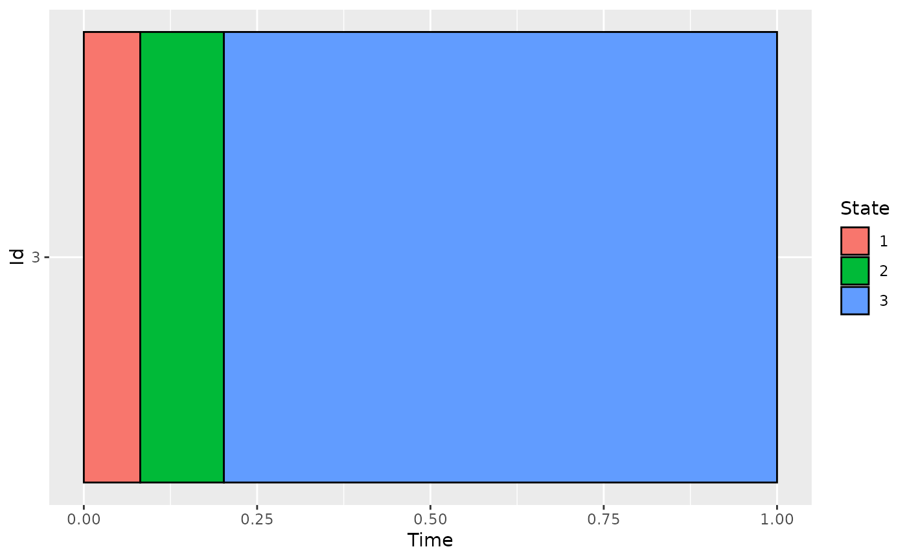
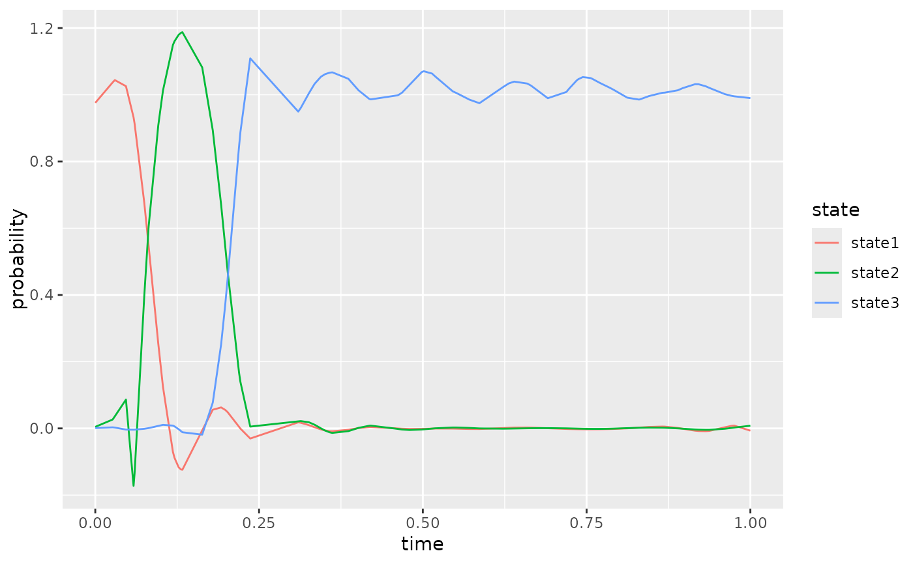
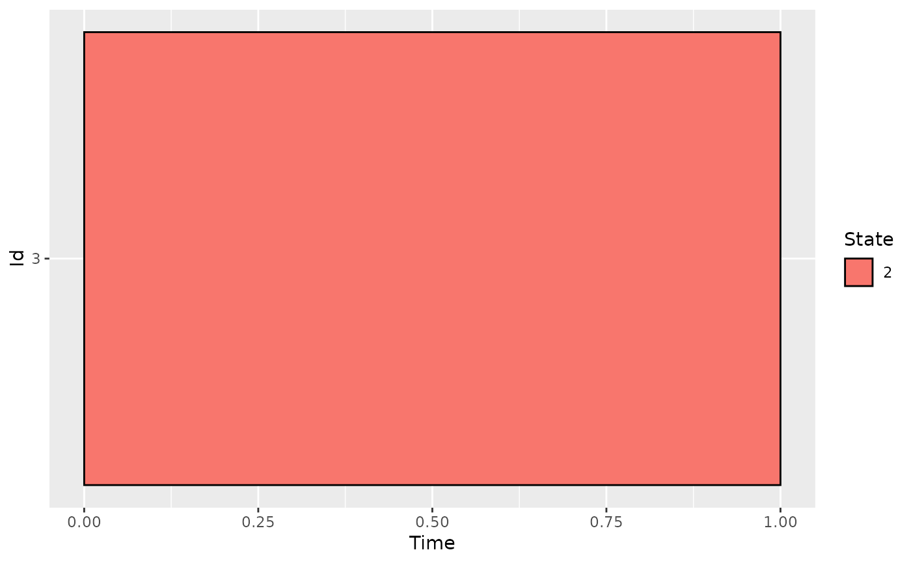

Plot reconstructed indicators
plotIndicatorsReconstruction(reconstruction, id, states = NULL)output of reconstructIndicators
id of the individual to plot. id must be in reconstruction$id
states to plot, by default all states are plotted
ggplot
set.seed(42)
# Simulate the Jukes-Cantor model of nucleotide replacement
K <- 3
Tmax <- 1
d_JK <- generate_Markov(n = 100, K = K, Tmax = Tmax)
d_JK2 <- cut_data(d_JK, Tmax)
# create basis object
m <- 20
b <- create.bspline.basis(c(0, Tmax), nbasis = m, norder = 4)
# \donttest{
# compute encoding
encoding <- compute_optimal_encoding(d_JK2, b, computeCI = FALSE, nCores = 1)
#> ######### Compute encoding #########
#> Number of individuals: 100
#> Number of states: 3
#> Basis type: bspline
#> Number of basis functions: 20
#> Number of cores: 1
#> Method: precompute
#>
| | 0 % elapsed=00s
|=== | 5 % elapsed=00s, remaining~00s
|===== | 10% elapsed=00s, remaining~00s
|======== | 15% elapsed=00s, remaining~00s
|========== | 20% elapsed=00s, remaining~00s
|============= | 25% elapsed=00s, remaining~00s
|=============== | 30% elapsed=00s, remaining~00s
|================== | 35% elapsed=00s, remaining~00s
|==================== | 40% elapsed=00s, remaining~00s
|======================= | 45% elapsed=00s, remaining~00s
|========================= | 50% elapsed=00s, remaining~00s
|============================ | 55% elapsed=00s, remaining~00s
|============================== | 60% elapsed=00s, remaining~00s
|================================= | 65% elapsed=00s, remaining~00s
|=================================== | 70% elapsed=00s, remaining~00s
|====================================== | 75% elapsed=00s, remaining~00s
|======================================== | 80% elapsed=00s, remaining~00s
|=========================================== | 85% elapsed=00s, remaining~00s
|============================================= | 90% elapsed=00s, remaining~00s
|================================================ | 95% elapsed=00s, remaining~00s
|==================================================| 100% elapsed=00s, remaining~00s
#>
#> DONE in 0.53s
#> ---- Compute U matrix:
#>
| | 0 % elapsed=00s
|= | 0 % elapsed=00s, remaining~06s
|= | 1 % elapsed=00s, remaining~06s
|= | 1 % elapsed=00s, remaining~06s
|= | 2 % elapsed=00s, remaining~06s
|== | 2 % elapsed=00s, remaining~07s
|== | 3 % elapsed=00s, remaining~07s
|== | 3 % elapsed=00s, remaining~07s
|== | 4 % elapsed=00s, remaining~07s
|=== | 4 % elapsed=00s, remaining~07s
|=== | 5 % elapsed=00s, remaining~06s
|=== | 5 % elapsed=00s, remaining~06s
|=== | 6 % elapsed=00s, remaining~06s
|==== | 6 % elapsed=00s, remaining~07s
|==== | 7 % elapsed=00s, remaining~07s
|==== | 7 % elapsed=00s, remaining~06s
|==== | 8 % elapsed=01s, remaining~06s
|===== | 8 % elapsed=01s, remaining~06s
|===== | 9 % elapsed=01s, remaining~06s
|===== | 9 % elapsed=01s, remaining~06s
|===== | 10% elapsed=01s, remaining~06s
|===== | 10% elapsed=01s, remaining~06s
|====== | 10% elapsed=01s, remaining~06s
|====== | 11% elapsed=01s, remaining~06s
|====== | 11% elapsed=01s, remaining~06s
|====== | 12% elapsed=01s, remaining~06s
|======= | 12% elapsed=01s, remaining~06s
|======= | 13% elapsed=01s, remaining~06s
|======= | 13% elapsed=01s, remaining~06s
|======= | 14% elapsed=01s, remaining~06s
|======== | 14% elapsed=01s, remaining~06s
|======== | 15% elapsed=01s, remaining~06s
|======== | 15% elapsed=01s, remaining~06s
|======== | 16% elapsed=01s, remaining~06s
|========= | 16% elapsed=01s, remaining~06s
|========= | 17% elapsed=01s, remaining~06s
|========= | 17% elapsed=01s, remaining~06s
|========= | 18% elapsed=01s, remaining~06s
|========== | 18% elapsed=01s, remaining~06s
|========== | 19% elapsed=01s, remaining~06s
|========== | 19% elapsed=01s, remaining~06s
|========== | 20% elapsed=01s, remaining~06s
|========== | 20% elapsed=01s, remaining~06s
|=========== | 20% elapsed=01s, remaining~06s
|=========== | 21% elapsed=01s, remaining~06s
|=========== | 21% elapsed=01s, remaining~05s
|=========== | 22% elapsed=02s, remaining~05s
|============ | 22% elapsed=02s, remaining~05s
|============ | 23% elapsed=02s, remaining~05s
|============ | 23% elapsed=02s, remaining~05s
|============ | 24% elapsed=02s, remaining~05s
|============= | 24% elapsed=02s, remaining~05s
|============= | 25% elapsed=02s, remaining~05s
|============= | 25% elapsed=02s, remaining~05s
|============= | 26% elapsed=02s, remaining~05s
|============== | 26% elapsed=02s, remaining~05s
|============== | 27% elapsed=02s, remaining~05s
|============== | 27% elapsed=02s, remaining~05s
|============== | 28% elapsed=02s, remaining~05s
|=============== | 28% elapsed=02s, remaining~05s
|=============== | 29% elapsed=02s, remaining~05s
|=============== | 29% elapsed=02s, remaining~05s
|=============== | 30% elapsed=02s, remaining~05s
|=============== | 30% elapsed=02s, remaining~05s
|================ | 30% elapsed=02s, remaining~05s
|================ | 31% elapsed=02s, remaining~05s
|================ | 31% elapsed=02s, remaining~05s
|================ | 32% elapsed=02s, remaining~05s
|================= | 32% elapsed=02s, remaining~05s
|================= | 33% elapsed=02s, remaining~05s
|================= | 33% elapsed=02s, remaining~05s
|================= | 34% elapsed=02s, remaining~05s
|================== | 34% elapsed=02s, remaining~05s
|================== | 35% elapsed=02s, remaining~05s
|================== | 35% elapsed=02s, remaining~05s
|================== | 36% elapsed=03s, remaining~05s
|=================== | 36% elapsed=03s, remaining~04s
|=================== | 37% elapsed=03s, remaining~04s
|=================== | 37% elapsed=03s, remaining~04s
|=================== | 38% elapsed=03s, remaining~04s
|==================== | 38% elapsed=03s, remaining~04s
|==================== | 39% elapsed=03s, remaining~04s
|==================== | 39% elapsed=03s, remaining~04s
|==================== | 40% elapsed=03s, remaining~04s
|==================== | 40% elapsed=03s, remaining~04s
|===================== | 40% elapsed=03s, remaining~04s
|===================== | 41% elapsed=03s, remaining~04s
|===================== | 41% elapsed=03s, remaining~04s
|===================== | 42% elapsed=03s, remaining~04s
|====================== | 42% elapsed=03s, remaining~04s
|====================== | 43% elapsed=03s, remaining~04s
|====================== | 43% elapsed=03s, remaining~04s
|====================== | 44% elapsed=03s, remaining~04s
|======================= | 44% elapsed=03s, remaining~04s
|======================= | 45% elapsed=03s, remaining~04s
|======================= | 45% elapsed=03s, remaining~04s
|======================= | 46% elapsed=03s, remaining~04s
|======================== | 46% elapsed=03s, remaining~04s
|======================== | 47% elapsed=03s, remaining~04s
|======================== | 47% elapsed=03s, remaining~04s
|======================== | 48% elapsed=03s, remaining~04s
|========================= | 48% elapsed=03s, remaining~04s
|========================= | 49% elapsed=03s, remaining~04s
|========================= | 49% elapsed=03s, remaining~04s
|========================= | 50% elapsed=03s, remaining~04s
|========================= | 50% elapsed=04s, remaining~04s
|========================== | 50% elapsed=04s, remaining~03s
|========================== | 51% elapsed=04s, remaining~03s
|========================== | 51% elapsed=04s, remaining~03s
|========================== | 52% elapsed=04s, remaining~03s
|=========================== | 52% elapsed=04s, remaining~03s
|=========================== | 53% elapsed=04s, remaining~03s
|=========================== | 53% elapsed=04s, remaining~03s
|=========================== | 54% elapsed=04s, remaining~03s
|============================ | 54% elapsed=04s, remaining~03s
|============================ | 55% elapsed=04s, remaining~03s
|============================ | 55% elapsed=04s, remaining~03s
|============================ | 56% elapsed=04s, remaining~03s
|============================= | 56% elapsed=04s, remaining~03s
|============================= | 57% elapsed=04s, remaining~03s
|============================= | 57% elapsed=04s, remaining~03s
|============================= | 58% elapsed=04s, remaining~03s
|============================== | 58% elapsed=04s, remaining~03s
|============================== | 59% elapsed=04s, remaining~03s
|============================== | 59% elapsed=04s, remaining~03s
|============================== | 60% elapsed=04s, remaining~03s
|============================== | 60% elapsed=04s, remaining~03s
|=============================== | 60% elapsed=04s, remaining~03s
|=============================== | 61% elapsed=04s, remaining~03s
|=============================== | 61% elapsed=04s, remaining~03s
|=============================== | 62% elapsed=04s, remaining~03s
|================================ | 62% elapsed=04s, remaining~03s
|================================ | 63% elapsed=04s, remaining~03s
|================================ | 63% elapsed=04s, remaining~03s
|================================ | 64% elapsed=04s, remaining~03s
|================================= | 64% elapsed=05s, remaining~03s
|================================= | 65% elapsed=05s, remaining~02s
|================================= | 65% elapsed=05s, remaining~02s
|================================= | 66% elapsed=05s, remaining~02s
|================================== | 66% elapsed=05s, remaining~02s
|================================== | 67% elapsed=05s, remaining~02s
|================================== | 67% elapsed=05s, remaining~02s
|================================== | 68% elapsed=05s, remaining~02s
|=================================== | 68% elapsed=05s, remaining~02s
|=================================== | 69% elapsed=05s, remaining~02s
|=================================== | 69% elapsed=05s, remaining~02s
|=================================== | 70% elapsed=05s, remaining~02s
|=================================== | 70% elapsed=05s, remaining~02s
|==================================== | 70% elapsed=05s, remaining~02s
|==================================== | 71% elapsed=05s, remaining~02s
|==================================== | 71% elapsed=05s, remaining~02s
|==================================== | 72% elapsed=05s, remaining~02s
|===================================== | 72% elapsed=05s, remaining~02s
|===================================== | 73% elapsed=05s, remaining~02s
|===================================== | 73% elapsed=05s, remaining~02s
|===================================== | 74% elapsed=05s, remaining~02s
|====================================== | 74% elapsed=05s, remaining~02s
|====================================== | 75% elapsed=05s, remaining~02s
|====================================== | 75% elapsed=05s, remaining~02s
|====================================== | 76% elapsed=05s, remaining~02s
|======================================= | 76% elapsed=05s, remaining~02s
|======================================= | 77% elapsed=05s, remaining~02s
|======================================= | 77% elapsed=05s, remaining~02s
|======================================= | 78% elapsed=05s, remaining~02s
|======================================== | 78% elapsed=05s, remaining~02s
|======================================== | 79% elapsed=06s, remaining~02s
|======================================== | 79% elapsed=06s, remaining~01s
|======================================== | 80% elapsed=06s, remaining~01s
|======================================== | 80% elapsed=06s, remaining~01s
|========================================= | 80% elapsed=06s, remaining~01s
|========================================= | 81% elapsed=06s, remaining~01s
|========================================= | 81% elapsed=06s, remaining~01s
|========================================= | 82% elapsed=06s, remaining~01s
|========================================== | 82% elapsed=06s, remaining~01s
|========================================== | 83% elapsed=06s, remaining~01s
|========================================== | 83% elapsed=06s, remaining~01s
|========================================== | 84% elapsed=06s, remaining~01s
|=========================================== | 84% elapsed=06s, remaining~01s
|=========================================== | 85% elapsed=06s, remaining~01s
|=========================================== | 85% elapsed=06s, remaining~01s
|=========================================== | 86% elapsed=06s, remaining~01s
|============================================ | 86% elapsed=06s, remaining~01s
|============================================ | 87% elapsed=06s, remaining~01s
|============================================ | 87% elapsed=06s, remaining~01s
|============================================ | 88% elapsed=06s, remaining~01s
|============================================= | 88% elapsed=06s, remaining~01s
|============================================= | 89% elapsed=06s, remaining~01s
|============================================= | 89% elapsed=06s, remaining~01s
|============================================= | 90% elapsed=06s, remaining~01s
|============================================= | 90% elapsed=06s, remaining~01s
|============================================== | 90% elapsed=06s, remaining~01s
|============================================== | 91% elapsed=06s, remaining~01s
|============================================== | 91% elapsed=06s, remaining~01s
|============================================== | 92% elapsed=06s, remaining~01s
|=============================================== | 92% elapsed=07s, remaining~01s
|=============================================== | 93% elapsed=07s, remaining~01s
|=============================================== | 93% elapsed=07s, remaining~00s
|=============================================== | 94% elapsed=07s, remaining~00s
|================================================ | 94% elapsed=07s, remaining~00s
|================================================ | 95% elapsed=07s, remaining~00s
|================================================ | 95% elapsed=07s, remaining~00s
|================================================ | 96% elapsed=07s, remaining~00s
|================================================= | 96% elapsed=07s, remaining~00s
|================================================= | 97% elapsed=07s, remaining~00s
|================================================= | 97% elapsed=07s, remaining~00s
|================================================= | 98% elapsed=07s, remaining~00s
|==================================================| 98% elapsed=07s, remaining~00s
|==================================================| 99% elapsed=07s, remaining~00s
|==================================================| 99% elapsed=07s, remaining~00s
|==================================================| 100% elapsed=07s, remaining~00s
|==================================================| 100% elapsed=07s, remaining~00s
#>
| | 0 % ~calculating
|= | 1 % ~02s
|= | 2 % ~02s
|== | 3 % ~02s
|== | 4 % ~02s
|=== | 5 % ~02s
|=== | 6 % ~02s
|==== | 7 % ~02s
|==== | 8 % ~01s
|===== | 9 % ~01s
|===== | 10% ~02s
|====== | 11% ~02s
|====== | 12% ~02s
|======= | 13% ~02s
|======= | 14% ~02s
|======== | 15% ~02s
|======== | 16% ~01s
|========= | 17% ~02s
|========= | 18% ~02s
|========== | 19% ~02s
|========== | 20% ~01s
|=========== | 21% ~02s
|=========== | 22% ~02s
|============ | 23% ~01s
|============ | 24% ~01s
|============= | 25% ~01s
|============= | 26% ~01s
|============== | 27% ~01s
|============== | 28% ~01s
|=============== | 29% ~01s
|=============== | 30% ~01s
|================ | 31% ~01s
|================ | 32% ~01s
|================= | 33% ~01s
|================= | 34% ~01s
|================== | 35% ~01s
|================== | 36% ~01s
|=================== | 37% ~01s
|=================== | 38% ~01s
|==================== | 39% ~01s
|==================== | 40% ~01s
|===================== | 41% ~01s
|===================== | 42% ~01s
|====================== | 43% ~01s
|====================== | 44% ~01s
|======================= | 45% ~01s
|======================= | 46% ~01s
|======================== | 47% ~01s
|======================== | 48% ~01s
|========================= | 49% ~01s
|========================= | 50% ~01s
|========================== | 51% ~01s
|========================== | 52% ~01s
|=========================== | 53% ~01s
|=========================== | 54% ~01s
|============================ | 55% ~01s
|============================ | 56% ~01s
|============================= | 57% ~01s
|============================= | 58% ~01s
|============================== | 59% ~01s
|============================== | 60% ~01s
|=============================== | 61% ~01s
|=============================== | 62% ~01s
|================================ | 63% ~01s
|================================ | 64% ~01s
|================================= | 65% ~01s
|================================= | 66% ~01s
|================================== | 67% ~01s
|================================== | 68% ~01s
|=================================== | 69% ~01s
|=================================== | 70% ~01s
|==================================== | 71% ~01s
|==================================== | 72% ~01s
|===================================== | 73% ~01s
|===================================== | 74% ~00s
|====================================== | 75% ~00s
|====================================== | 76% ~00s
|======================================= | 77% ~00s
|======================================= | 78% ~00s
|======================================== | 79% ~00s
|======================================== | 80% ~00s
|========================================= | 81% ~00s
|========================================= | 82% ~00s
|========================================== | 83% ~00s
|========================================== | 84% ~00s
|=========================================== | 85% ~00s
|=========================================== | 86% ~00s
|============================================ | 87% ~00s
|============================================ | 88% ~00s
|============================================= | 89% ~00s
|============================================= | 90% ~00s
|============================================== | 91% ~00s
|============================================== | 92% ~00s
|=============================================== | 93% ~00s
|=============================================== | 94% ~00s
|================================================ | 95% ~00s
|================================================ | 96% ~00s
|================================================= | 97% ~00s
|================================================= | 98% ~00s
|==================================================| 99% ~00s
|==================================================| 100% elapsed=02s
#>
#> DONE in 8.93s
#> ---- Compute encoding:
#> DONE in 0s
#> Run Time: 9.55s
indicators <- reconstructIndicators(encoding)
#> [1] "Reconstruct data using 37 components (out of 60)"
# we plot the first path and its reconstructed indicators
iInd <- 3
plotData(d_JK2[d_JK2$id == iInd, ])

plotIndicatorsReconstruction(indicators, id = iInd)

# the column state contains the state associated with the greatest indicator.
# So, the output can be used with plotData function
plotData(remove_duplicated_states(indicators[indicators$id == iInd, ]))

# }